Every team in Formula One must run two cars in every session in a Grand Prix weekend, and every team may use up to four drivers in a season.A team may also run two additional drivers during Free Practice sessions,which are often used to test potential new drivers for a career as a Formula One driver or allow experienced drivers to evaluate the car. Most drivers are typically contracted for at least the duration of a season,with driver changes taking place in-between seasons. Recent years, however, have seen a move away from this trend, with teams replacing drivers such as Daniel Ricciardo, Logan Sargeant , and Jack Doohan mid-season.
Each competitor must be in the possession of an FIA Super Licence to compete in a Grand Prix,a licence that is issued to drivers who have met the criteria of success in junior motorsport categories and have achieved 300 kilometres (190 mi) of running in a Formula One car in 2 days.Teams can also contract reserve drivers to stand in for regular drivers when necessary and develop the team's car. With the reduction in testing, however, the reserve drivers' role mainly takes place on a simulator,such as rFpro, which is used by most of the F1 teams.
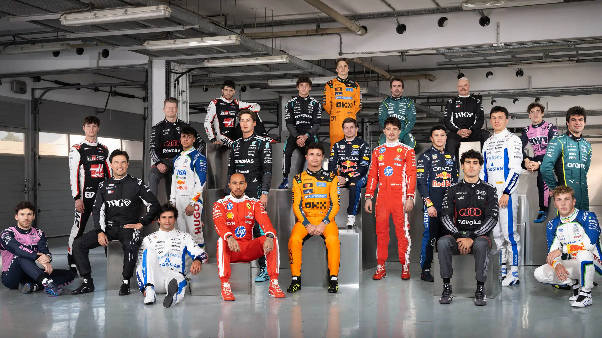
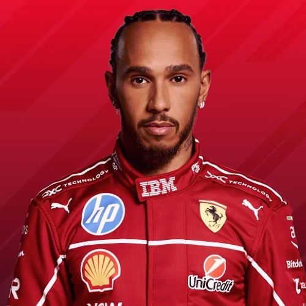
Sir Lewis Carl Davidson Hamilton is a British racing driver who competes in Formula One for Ferrari. Hamilton has won a joint-record seven Formula One World Drivers' Championship titles—tied with Michael Schumacher—and holds the records for most wins, pole positions, and podium finishes, among others.
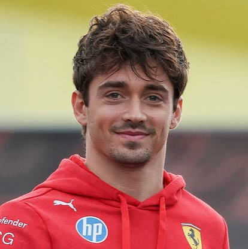
Charles Marc Hervé Perceval Leclerc is a Monégasque racing driver who competes in Formula One for Ferrari. Leclerc was runner-up in the Formula One World Drivers' Championship in 2022 with Ferrari, and has won nine Grands Prix across nine seasons.
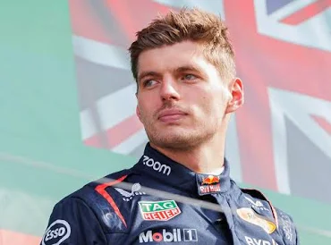
Maximilian Johann Maria Verstappen is a Dutch racing driver who competes in Formula One for Red Bull Racing. Verstappen has won the Formula One World Drivers' Championship in 2021 and 2022.
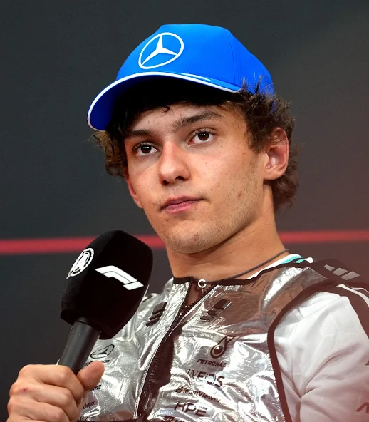
Andrea Kimi Antonelli is an Italian racing driver who competes in Formula One for Alfa Romeo. He has also competed in other motorsport series, including the European Formula Three Championship and the Formula 2 Championship.
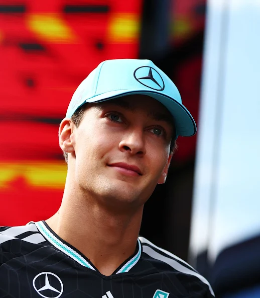
George William Russell is a British racing driver who competes in Formula One for Mercedes. Russell has won seven Formula One Grands Prix across eight seasons. Born and raised in King's Lynn, Russell began competitive kart racing aged seven.
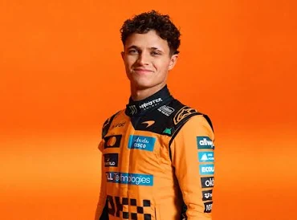
Lando Christian Norris is a British racing driver who competes in Formula One for McLaren. Norris has won several races and has been a consistent performer in the sport.
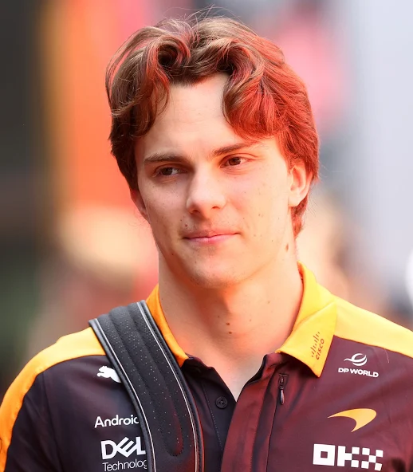
Oscar Piastri is an Australian racing driver who competes in Formula One for McLaren. He has shown great promise in his early career and is considered one of the rising stars of the sport.
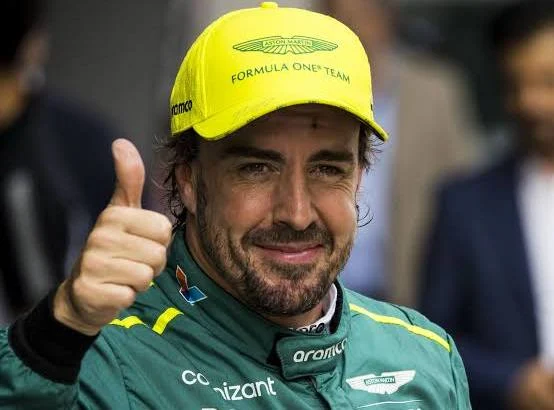
Fernando Alonso is a Spanish racing driver who competes in Formula One for Aston Martin. He has won two Formula One World Championships and is known for his aggressive driving style and technical knowledge.
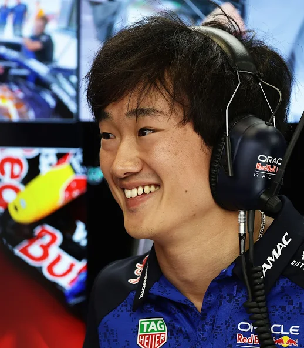
Yuki Tsunoda is a Japanese racing driver who competes in Formula One for AlphaTauri. He has shown promise in his early career and is considered one of the rising stars of the sport.
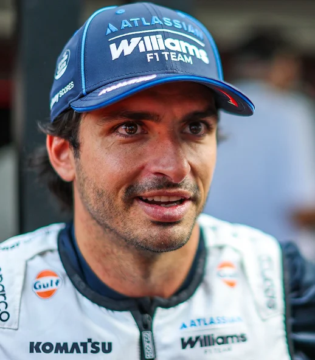
Carlos Sainz is a Spanish racing driver who competes in Formula One for Ferrari. He has won several races and is known for his aggressive driving style and technical knowledge.
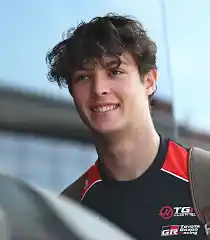
Oliver Bearman is a British racing driver who competes in Formula One for Alpine. He has shown promise in his early career and is considered one of the rising stars of the sport.
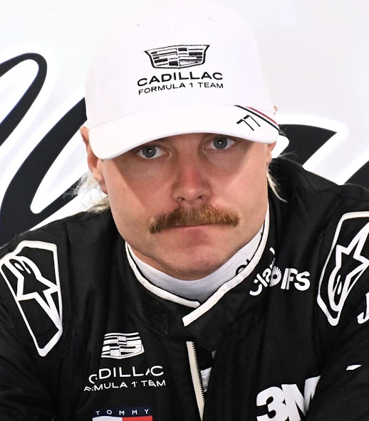
Valtteri Bottas is a Finnish racing driver who competes in Formula One for Alfa Romeo. He has won several races and is known for his consistent performance and technical knowledge.
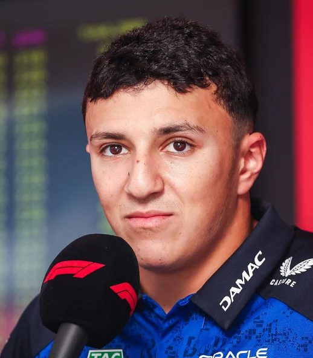
Isack Alexandre Hadjar is a French and Algerian racing driver who competes under the French flag in Formula One for Red Bull Racing. Born and raised in Paris to an Algerian family, Hadjar began competitive kart racing aged seven.
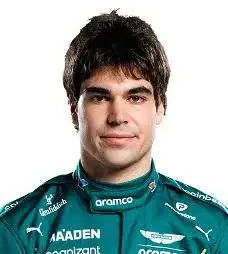
Lance Jacob Strulovitch, commonly known as Lance Stroll, is a Canadian racing driver who competes in Formula One for Aston Martin. Born and raised in Montreal, Stroll is the son of billionaire businessman Lawrence Stroll, owner of the Aston Martin F1 Team, and his Belgian ex-wife.
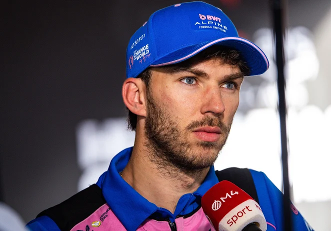
Pierre Jean-Jacques Gasly is a French racing driver who competes in Formula One for Alpine. Gasly won the 2020 Italian Grand Prix with AlphaTauri. Born and raised in Normandy, Gasly began competitive kart racing aged 10.
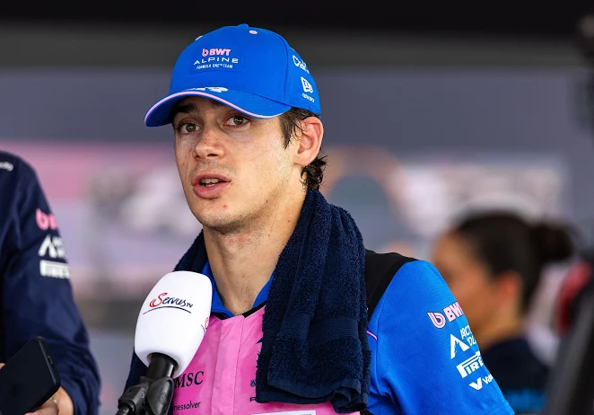
Franco Alejandro Colapinto is an Argentine racing driver who competes in Formula One for Alpine. Born and raised in Pilar, Buenos Aires, Colapinto began competitive kart racing at the age of nine, winning several regional and national championships.
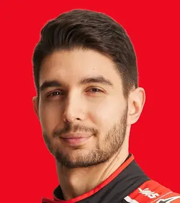
Esteban José Jean-Pierre Ocon-Khelfane is a French racing driver who competes in Formula One for Haas. Born and raised in Normandy to a working-class family, Ocon began competitive kart racing aged nine, winning several national and international titles.
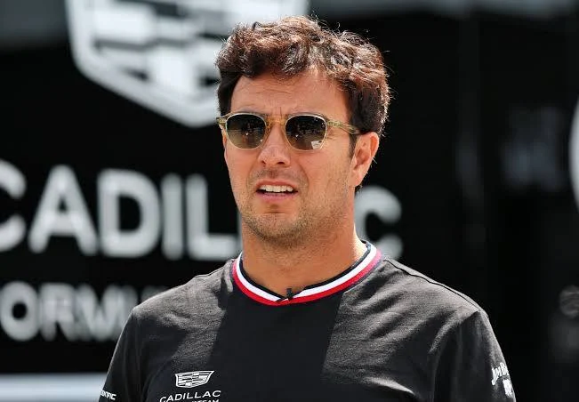
Sergio Michel "Checo" Pérez Mendoza is a Mexican racing driver who competes in Formula One for Cadillac. Pérez was runner-up in the Formula One World Drivers' Championship in 2023 with Red Bull, and has won six Grands Prix across 15 seasons. Born and raised in Guadalajara, Pérez began competitive kart racing aged six.
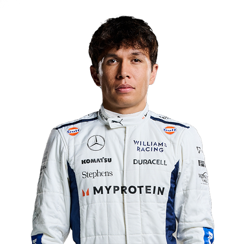
Alexander Philippe Albon Ansusinha is a Thai and British racing driver who competes under the Thai flag in Formula One for Williams. Born in Westminster and raised in Suffolk, Albon is the son of English racing driver Nigel Albon and his Thai wife, as well as the nephew of Mark Albon.
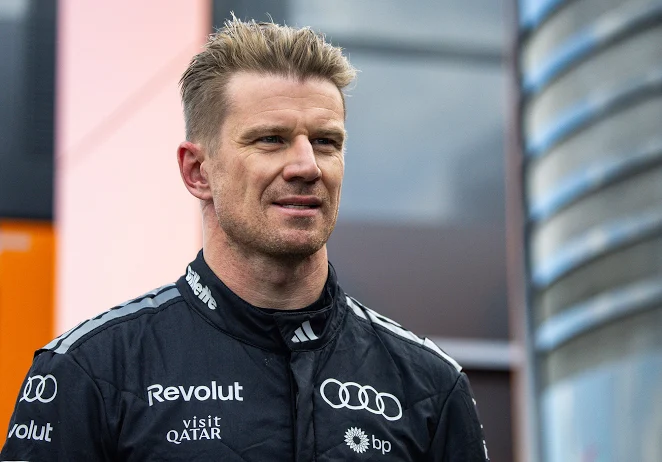
Nicolas Hülkenberg is a German racing driver who competes in Formula One for Audi. In endurance racing, Hülkenberg won the 24 Hours of Le Mans in 2015 with Porsche.
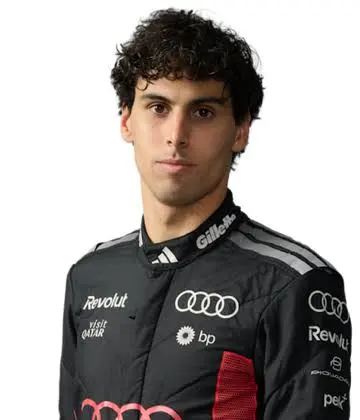
Gabriel Lourenzo "Gabi" Bortoleto Oliveira is a Brazilian racing driver who competes in Formula One for Audi. Born and raised in Osasco, Bortoleto began competitive kart racing aged seven, winning multiple national titles and graduating to junior formulae in 2020.
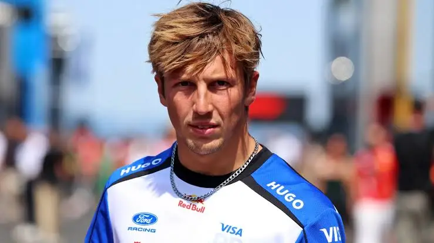
Liam Jared Lawson is a New Zealand racing driver who competes in Formula One for Racing Bulls. Born in Hastings and raised in Pukekohe, Lawson began competitive kart racing aged six.